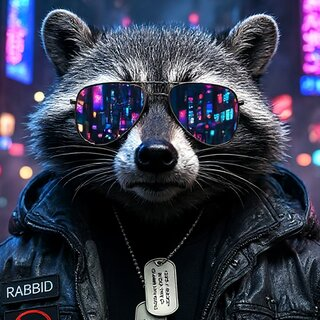

🦝 About me

- 🧪 I run an AI crew. Rick, Morty, Birdperson, Beth and the gang babysit my backups, home lab and gadgets, then report in, in character, every single day.
- 🎩 My butler swears. Joshua sleeps until he hears his name, then answers out loud with the manners of Jeeves and the mouth of George Carlin.
- 🧠 Zero GPU, zero subscriptions. Free cloud AIs when I'm online, local AIs on the CPU when I'm not. The internet goes down, the crew keeps working.
- 🐧 Omarchy daily driver. A few weeks ago I didn't know what
sudodid. Now I run Arch + Hyprland and break things on purpose in my lab.
🚀 Things I've built
Ask Rick try it
Chat with a PG Rick Sanchez whose AI brain runs right inside your browser. No server, no account.
Rick & Joshua ollama run
Run my Rick or my Carlin-mouthed butler Joshua on your own computer: ollama run 2db2du/rick or 2db2du/joshua. No GPU needed.
Mission Control
A Rick and Morty themed dashboard and API for my home AI crew: reports, launch pad, offline library search.
Rick's crew
Scheduled AI jobs on n8n plus a "brain switch" that juggles 7 free cloud AIs (Groq, Gemini, Mistral, OpenRouter, Cloudflare, NVIDIA NIM with Kimi K3, Ollama Cloud) and falls back to local AIs when the internet's out.
Hey Joshua
An offline, always-listening voice butler with a British accent. Silent until you say his name.
joshua
Terminal chat that sends every message to the best local AI model for the job.
Matrix Lab
A Matrix-green desktop for Linux: a raccoon cursor and a seamless falling-code live wallpaper. All free, no GPU.
homelab
One command to run self-hosted apps: Nextcloud, Paperless, Mealie, Immich and friends.
Private search
My own SearXNG search engine, started on demand, that my AIs search through too.
All free, all MIT licensed. Take them, break them, make them better.